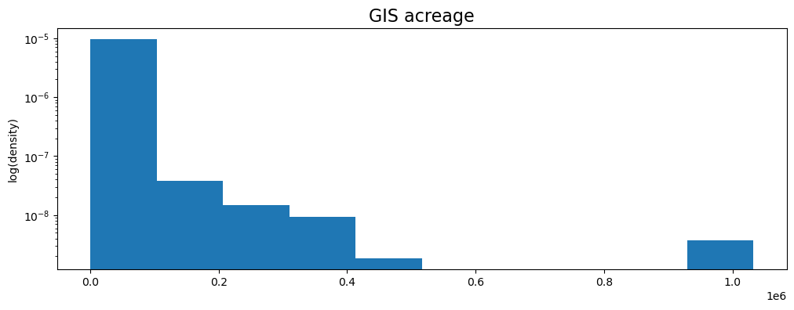

Getting Data
Contents
!pip install geopandas shapely fiona pyproj rtree
Requirement already satisfied: geopandas in c:\users\barguzin\anaconda3\envs\geo_env\lib\site-packages (0.11.1)
Requirement already satisfied: shapely in c:\users\barguzin\anaconda3\envs\geo_env\lib\site-packages (1.8.4)
Requirement already satisfied: fiona in c:\users\barguzin\anaconda3\envs\geo_env\lib\site-packages (1.8.21)
Requirement already satisfied: pyproj in c:\users\barguzin\anaconda3\envs\geo_env\lib\site-packages (3.4.0)
Requirement already satisfied: rtree in c:\users\barguzin\anaconda3\envs\geo_env\lib\site-packages (1.0.0)
Requirement already satisfied: pandas>=1.0.0 in c:\users\barguzin\anaconda3\envs\geo_env\lib\site-packages (from geopandas) (1.5.0)
Requirement already satisfied: packaging in c:\users\barguzin\anaconda3\envs\geo_env\lib\site-packages (from geopandas) (21.3)
Requirement already satisfied: attrs>=17 in c:\users\barguzin\anaconda3\envs\geo_env\lib\site-packages (from fiona) (21.4.0)
Requirement already satisfied: certifi in c:\users\barguzin\anaconda3\envs\geo_env\lib\site-packages (from fiona) (2022.9.24)
Requirement already satisfied: click>=4.0 in c:\users\barguzin\anaconda3\envs\geo_env\lib\site-packages (from fiona) (8.1.3)
Requirement already satisfied: cligj>=0.5 in c:\users\barguzin\anaconda3\envs\geo_env\lib\site-packages (from fiona) (0.7.2)
Requirement already satisfied: click-plugins>=1.0 in c:\users\barguzin\anaconda3\envs\geo_env\lib\site-packages (from fiona) (1.1.1)
Requirement already satisfied: six>=1.7 in c:\users\barguzin\anaconda3\envs\geo_env\lib\site-packages (from fiona) (1.16.0)
Requirement already satisfied: munch in c:\users\barguzin\anaconda3\envs\geo_env\lib\site-packages (from fiona) (2.5.0)
Requirement already satisfied: setuptools in c:\users\barguzin\anaconda3\envs\geo_env\lib\site-packages (from fiona) (65.4.0)
Requirement already satisfied: colorama in c:\users\barguzin\anaconda3\envs\geo_env\lib\site-packages (from click>=4.0->fiona) (0.4.5)
Requirement already satisfied: pytz>=2020.1 in c:\users\barguzin\anaconda3\envs\geo_env\lib\site-packages (from pandas>=1.0.0->geopandas) (2022.2.1)
Requirement already satisfied: numpy>=1.21.0 in c:\users\barguzin\anaconda3\envs\geo_env\lib\site-packages (from pandas>=1.0.0->geopandas) (1.23.3)
Requirement already satisfied: python-dateutil>=2.8.1 in c:\users\barguzin\anaconda3\envs\geo_env\lib\site-packages (from pandas>=1.0.0->geopandas) (2.8.2)
Requirement already satisfied: pyparsing!=3.0.5,>=2.0.2 in c:\users\barguzin\anaconda3\envs\geo_env\lib\site-packages (from packaging->geopandas) (3.0.9)
import fiona
import pandas as pd
import geopandas as gpd
import matplotlib.pyplot as plt
import seaborn as sns
import numpy as np
---------------------------------------------------------------------------
ModuleNotFoundError Traceback (most recent call last)
Cell In [2], line 5
3 import geopandas as gpd
4 import matplotlib.pyplot as plt
----> 5 import seaborn as sns
6 import numpy as np
ModuleNotFoundError: No module named 'seaborn'
Getting Data#
Fire Perimeters#
! wget https://frap.fire.ca.gov/media/3ufh3ajg/fire21_1.zip -O fire_perims.zip -nc
File ‘fire_perims.zip’ already there; not retrieving.
! unzip -n fire_perims.zip
Archive: fire_perims.zip
! ls
fire21_1.gdb fire_perims.zip sample_data
gdb_file = 'fire21_1.gdb'
# Get all the layers from the .gdb file
layers = fiona.listlayers(gdb_file)
for layer in layers:
if layer == 'firep21_1': # there are 3 files in gdb, we only need one
print(f'found file: {layer}')
fires = gpd.read_file(gdb_file,layer=layer)
found file: firep21_1
WARNING:fiona._env:organizePolygons() received a polygon with more than 100 parts. The processing may be really slow. You can skip the processing by setting METHOD=SKIP.
fires.shape
(21686, 18)
# there are 20k fires in the data set, lets randomly plot 1000 of them
fires.sample(1000).plot()
<matplotlib.axes._subplots.AxesSubplot at 0x7fe92bd0c410>
fires.head()
| YEAR_ | STATE | AGENCY | UNIT_ID | FIRE_NAME | INC_NUM | ALARM_DATE | CONT_DATE | CAUSE | COMMENTS | REPORT_AC | GIS_ACRES | C_METHOD | OBJECTIVE | FIRE_NUM | Shape_Length | Shape_Area | geometry | |
|---|---|---|---|---|---|---|---|---|---|---|---|---|---|---|---|---|---|---|
| 0 | 2020 | CA | CDF | NEU | NELSON | 00013212 | 2020-06-18T00:00:00+00:00 | 2020-06-23T00:00:00+00:00 | 11.0 | 110.0 | 109.602280 | 1.0 | 1.0 | None | 3252.523280 | 4.435447e+05 | MULTIPOLYGON (((-116841.251 97942.565, -116836... | |
| 1 | 2020 | CA | CDF | NEU | AMORUSO | 00011799 | 2020-06-01T00:00:00+00:00 | 2020-06-04T00:00:00+00:00 | 2.0 | 670.0 | 685.585022 | 1.0 | 1.0 | None | 9653.760308 | 2.774464e+06 | MULTIPOLYGON (((-117328.400 90212.407, -117321... | |
| 2 | 2020 | CA | CDF | NEU | ATHENS | 00018493 | 2020-08-10T00:00:00+00:00 | 2020-03-01T00:00:00+00:00 | 14.0 | 26.0 | 27.300480 | 1.0 | 1.0 | None | 1649.643235 | 1.104811e+05 | MULTIPOLYGON (((-115605.059 92988.787, -115585... | |
| 3 | 2020 | CA | CDF | NEU | FLEMING | 00007619 | 2020-03-31T00:00:00+00:00 | 2020-04-01T00:00:00+00:00 | 9.0 | 13.0 | 12.931545 | 1.0 | 1.0 | None | 1577.155857 | 5.233211e+04 | MULTIPOLYGON (((-110213.270 105975.579, -11020... | |
| 4 | 2020 | CA | CDF | NEU | MELANESE | 00008471 | 2020-04-14T00:00:00+00:00 | 2020-04-19T00:00:00+00:00 | 18.0 | 10.3 | 10.315964 | 1.0 | 1.0 | None | 1035.787625 | 4.174722e+04 | MULTIPOLYGON (((-111793.600 164243.615, -11177... |
fires.dtypes
YEAR_ object
STATE object
AGENCY object
UNIT_ID object
FIRE_NAME object
INC_NUM object
ALARM_DATE object
CONT_DATE object
CAUSE float64
COMMENTS object
REPORT_AC float64
GIS_ACRES float64
C_METHOD float64
OBJECTIVE float64
FIRE_NUM object
Shape_Length float64
Shape_Area float64
geometry geometry
dtype: object
# lets drop some variables that we will not be using
print(fires.shape[1])
fires.drop(['STATE', 'COMMENTS', 'C_METHOD', 'OBJECTIVE'], axis=1, inplace=True)
print(fires.shape[1])
18
14
# some mumbo jumbo with the dates
fires['ALARM_DATE'] = fires.ALARM_DATE.str.slice(0,10)
fires['CONT_DATE'] = fires.CONT_DATE.str.slice(0,10)
fires
| YEAR_ | AGENCY | UNIT_ID | FIRE_NAME | INC_NUM | ALARM_DATE | CONT_DATE | CAUSE | REPORT_AC | GIS_ACRES | FIRE_NUM | Shape_Length | Shape_Area | geometry | |
|---|---|---|---|---|---|---|---|---|---|---|---|---|---|---|
| 0 | 2020 | CDF | NEU | NELSON | 00013212 | 2020-06-18 | 2020-06-23 | 11.0 | 110.0 | 109.602280 | None | 3.252523e+03 | 4.435447e+05 | MULTIPOLYGON (((-116841.251 97942.565, -116836... |
| 1 | 2020 | CDF | NEU | AMORUSO | 00011799 | 2020-06-01 | 2020-06-04 | 2.0 | 670.0 | 685.585022 | None | 9.653760e+03 | 2.774464e+06 | MULTIPOLYGON (((-117328.400 90212.407, -117321... |
| 2 | 2020 | CDF | NEU | ATHENS | 00018493 | 2020-08-10 | 2020-03-01 | 14.0 | 26.0 | 27.300480 | None | 1.649643e+03 | 1.104811e+05 | MULTIPOLYGON (((-115605.059 92988.787, -115585... |
| 3 | 2020 | CDF | NEU | FLEMING | 00007619 | 2020-03-31 | 2020-04-01 | 9.0 | 13.0 | 12.931545 | None | 1.577156e+03 | 5.233211e+04 | MULTIPOLYGON (((-110213.270 105975.579, -11020... |
| 4 | 2020 | CDF | NEU | MELANESE | 00008471 | 2020-04-14 | 2020-04-19 | 18.0 | 10.3 | 10.315964 | None | 1.035788e+03 | 4.174722e+04 | MULTIPOLYGON (((-111793.600 164243.615, -11177... |
| ... | ... | ... | ... | ... | ... | ... | ... | ... | ... | ... | ... | ... | ... | ... |
| 21681 | 2021 | USF | SQF | BOYDEN 1 | 00000401 | 2021-03-03 | 2021-03-18 | 5.0 | 15.0 | 14.573442 | None | 9.276290e+02 | 5.897663e+04 | MULTIPOLYGON (((105451.745 -132832.621, 105410... |
| 21682 | 2021 | USF | INF | GLACIER NORTH | 00001732 | 2021-07-15 | 2021-08-20 | 1.0 | 37.0 | 37.255802 | None | 2.334983e+03 | 1.507689e+05 | MULTIPOLYGON (((139955.910 -95054.743, 139970.... |
| 21683 | 2021 | CCO | KRN | Backus 2 | 02118345 | 2021-04-25 | 2021-04-25 | 14.0 | 4.0 | 2.897352 | None | 6.368478e+02 | 1.172517e+04 | MULTIPOLYGON (((164896.149 -338556.435, 164893... |
| 21684 | 2021 | CDF | BTU | DIXIE | 00009205 | 2021-07-14 | 2021-10-25 | 11.0 | 963309.0 | 963405.437500 | None | 1.533820e+06 | 3.898763e+09 | MULTIPOLYGON (((-92538.590 256767.148, -92537.... |
| 21685 | 2021 | USF | KNF | RIVER COMPLEX | 00006385 | 2021-07-31 | 2021-10-25 | 1.0 | 155752.0 | 199354.093750 | None | 1.216645e+06 | 8.067574e+08 | MULTIPOLYGON (((-259575.040 330786.059, -25957... |
21686 rows × 14 columns
# calculate the number of where date is missing
print('number of missing records for alarm date:', fires.ALARM_DATE.isnull().sum())
print('number of missing records for containment date:', fires.CONT_DATE.isnull().sum())
number of missing records for alarm date: 5357
number of missing records for containment date: 12666
# convert variables to datetime
fires['ALARM_DATE'] = pd.to_datetime(fires.ALARM_DATE, errors='coerce')
fires['CONT_DATE'] = pd.to_datetime(fires.CONT_DATE, errors='coerce')
# calculate new variable duration
#fires['dur_days'] = (fires.CONT_DATE - fires.ALARM_DATE).dt.days
fires['dur_days'] = (fires.CONT_DATE - fires.ALARM_DATE).astype('timedelta64[D]')
print('Values where alarm date is before containment date:', fires.loc[fires.dur_days<0].shape[0])
Values where alarm date is before containment date: 32
fires.dur_days.isnull().sum()
12678
# drop where we have missing duration
print(fires.shape)
fires = fires.loc[fires.dur_days>0,]
print(fires.shape)
(21686, 15)
(5250, 15)
California Counties#
ca_counties = gpd.read_file('https://raw.githubusercontent.com/codeforgermany/click_that_hood/main/public/data/california-counties.geojson')
print(ca_counties.shape)
ca_counties.head()
(58, 5)
| name | cartodb_id | created_at | updated_at | geometry | |
|---|---|---|---|---|---|
| 0 | Alameda | 1 | 2015-07-04T21:04:58+00:00 | 2015-07-04T21:04:58+00:00 | MULTIPOLYGON (((-122.31293 37.89733, -122.2884... |
| 1 | Alpine | 2 | 2015-07-04T21:04:58+00:00 | 2015-07-04T21:04:58+00:00 | POLYGON ((-120.07239 38.70277, -119.96495 38.7... |
| 2 | Amador | 3 | 2015-07-04T21:04:58+00:00 | 2015-07-04T21:04:58+00:00 | POLYGON ((-121.02726 38.48925, -121.02741 38.5... |
| 3 | Butte | 4 | 2015-07-04T21:04:58+00:00 | 2015-07-04T21:04:58+00:00 | POLYGON ((-121.87925 39.30361, -121.90831 39.3... |
| 4 | Calaveras | 5 | 2015-07-04T21:04:58+00:00 | 2015-07-04T21:04:58+00:00 | POLYGON ((-120.87605 38.02889, -120.91875 38.0... |
Projections!#
# check
print(fires.crs)
print(ca_counties.crs)
epsg:3310
epsg:4326
# let's convert both of those to epsg:3857
# this will take a while - lots of calculations
fires = fires.to_crs('epsg:3857')
ca_counties = ca_counties.to_crs('epsg:3857')
# plot fires on CA
fig,ax = plt.subplots(figsize=(10,10))
ca_counties.plot(ax=ax, facecolor='w', ec='k');
fires.sample(1000).plot(fc='r', ax=ax);
plt.title('1000 fires in CA');

# THIS PART OF CODE IS OPENING A FILE VIA OGR - SKIP
# SOME LABELS ARE NOT READ BY GEOPANDAS
# from osgeo import ogr
# driver = ogr.GetDriverByName("OpenFileGDB")
# ds = driver.Open("fire21_1.gdb", 0)
# f = ds.GetLayer("firep21_1")
# print(type(f))
Measures of Location and Variation#
print('mean', fires.GIS_ACRES.mean())
print('median', fires.GIS_ACRES.median())
print('std', fires.GIS_ACRES.std())
mean 4342.1049991099635
median 135.8330841064453
std 28498.104881528623
Visualizing Data#
Histograms#
fig, ax = plt.subplots(figsize=(12,4))
fires.GIS_ACRES.plot(density=True, logy=True, kind='hist', ax=ax);
# changing title and labels
ax.set_title('GIS acreage', fontsize=16);
ax.set_ylabel('log(density)');

# create histograms for all numeric variables
num_vars = fires.select_dtypes(include=np.number).columns.tolist()
num_vars
['CAUSE', 'REPORT_AC', 'GIS_ACRES', 'Shape_Length', 'Shape_Area', 'dur_days']
fires[num_vars].hist(density=True, bins=30, figsize=(15,15));

# we can also call histogram from matplotlib interface
plt.hist(fires.GIS_ACRES);

Asking interesting questions about data#
What is the average size of wildfires in CA
Does average size of fires increase over time?
How many fires do we have per year?
Does the number of fires increase over time?
How does average fire duration change?
# calculating average size of fires in CA
fires.area.mean() # this is in square meters: 28,624,990
28624990.462906368
# convert YEAR_ to int
fires.YEAR_ = fires.YEAR_.astype(int)
fires.dtypes
YEAR_ int64
AGENCY object
UNIT_ID object
FIRE_NAME object
INC_NUM object
ALARM_DATE datetime64[ns]
CONT_DATE datetime64[ns]
CAUSE float64
REPORT_AC float64
GIS_ACRES float64
FIRE_NUM object
Shape_Length float64
Shape_Area float64
geometry geometry
dur_days float64
dtype: object
Grouping variables and summarizing#
# only use variables that you will be calculating on
avg_acres_by_year = fires[['YEAR_', 'GIS_ACRES']].groupby('YEAR_')["GIS_ACRES"].mean().reset_index()
avg_acres_by_year.set_index('YEAR_', inplace=True)
avg_acres_by_year.plot(figsize=(12,4), title='Average area of wildfires\n in California', color='r', linestyle='dashed');
# only use variables that you will be calculating on
total_acres_by_year = fires[['YEAR_', 'GIS_ACRES']].groupby('YEAR_')["GIS_ACRES"].sum().reset_index()
total_acres_by_year.set_index('YEAR_', inplace=True)
total_acres_by_year.plot(figsize=(12,4), title='Total area of wildfires\n in California');

print(fires.shape[0]) # number of records
print(fires.INC_NUM.count()) # number of fire_id
5250
5083
# calculate number of fires per year
fires_per_year = fires[['YEAR_', 'INC_NUM']].groupby('YEAR_')["INC_NUM"].count().reset_index()
fires_per_year.set_index('YEAR_', inplace=True)
fires_per_year.plot(figsize=(12,4), title='Total number of wildfires\n in California');

# zoom into specific years and change range on y-axis, remove legend label, change linestyle and marker style
fires_per_year.plot(figsize=(12,4), title='Total number of wildfires\n in California (1990-2020)', ylim=(0,350), xlim=(1989,2022), legend=False, color='k', marker='s', linestyle='-.');

# total duration of fires per year
dur_per_year = fires[['YEAR_', 'dur_days']].groupby('YEAR_')["dur_days"].sum().reset_index()
dur_per_year.set_index('YEAR_', inplace=True)
dur_per_year.plot(figsize=(12,4), title='Total duration of wildfires in days\n in California');

# get temperature
ca_temps = pd.read_csv('https://www.ncei.noaa.gov/cag/statewide/time-series/4-tavg-12-12-1910-2022.csv?base_prd=true&begbaseyear=1901&endbaseyear=2000', skiprows=5, header=None, dtype={0:'str'}, nrows=100) # use this line if following lab instructions
#ca_temps = pd.read_csv('https://raw.githubusercontent.com/barguzin/ucsb_geog172/main/data/ca_avg_temps.csv', skiprows=5, header=None, dtype={0:'str'}, nrows=100)
print(ca_temps.shape)
ca_temps.head()
(100, 3)
| 0 | 1 | 2 | |
|---|---|---|---|
| 0 | 191012 | 57.7 | 0.3 |
| 1 | 191112 | 55.4 | -2.0 |
| 2 | 191212 | 55.5 | -1.9 |
| 3 | 191312 | 56.4 | -1.0 |
| 4 | 191412 | 57.4 | 0.0 |
ca_temps.columns = ['date_year', 'temp', 'anomaly']
# prep year
# convert to
ca_temps.date_year = ca_temps.date_year.str.slice(0,4)
ca_temps.date_year = ca_temps.date_year.astype(int)
ca_temps.set_index('date_year', inplace=True)
ca_temps.tail()
| temp | anomaly | |
|---|---|---|
| date_year | ||
| 2005 | 58.6 | 1.2 |
| 2006 | 58.6 | 1.2 |
| 2007 | 58.9 | 1.5 |
| 2008 | 58.9 | 1.5 |
| 2009 | 58.8 | 1.4 |
print(ca_temps.index.dtype)
print(dur_per_year.index.dtype)
int64
int64
# plot total duration of wildfires and average temps on two subplots
fig, (ax1,ax2) = plt.subplots(2,1,figsize=(12,8), sharex=True)
ca_temps.temp.plot(ax=ax1)
ax1.set_title('Average Temperature in CA')
dur_per_year.plot(ax=ax2)
ax2.set_title('Total duration of wildfires in CA')
Text(0.5, 1.0, 'Total duration of wildfires in CA')
There is a problem with index alignment, we need to merge dataframes!#
merged = ca_temps.join(dur_per_year)
fig, (ax1,ax2) = plt.subplots(2,1,figsize=(12,8), sharex=True)
merged.temp.plot(ax=ax1)
ax1.set_title('Average Temperature in CA')
merged.dur_days.plot(ax=ax2)
ax2.set_title('Total duration of wildfires in CA')
Text(0.5, 1.0, 'Total duration of wildfires in CA')
Spatial join and some summary statistics#
Let’s imagine you work at the county GIS Department. You are tasked to describe the wildfire situation in that county. We need to be able to subset our data set by county. For that we need to run spatial join.
# join fires to counties
print(fires.shape) # total number of fires before join
sj = fires.sjoin(ca_counties[['name', 'geometry']], how='left') # only keep name and geometry other variables are not required
print(sj.shape) # total number of fires after join - notice some were duplicated because some fires stretch several couinties!
(5250, 15)
(5626, 17)
sj.head()
| YEAR_ | AGENCY | UNIT_ID | FIRE_NAME | INC_NUM | ALARM_DATE | CONT_DATE | CAUSE | REPORT_AC | GIS_ACRES | FIRE_NUM | Shape_Length | Shape_Area | geometry | dur_days | index_right | name | cartodb_id | created_at | updated_at | |
|---|---|---|---|---|---|---|---|---|---|---|---|---|---|---|---|---|---|---|---|---|
| 0 | 2020 | CDF | NEU | NELSON | 00013212 | 2020-06-18 | 2020-06-23 | 11.0 | 110.0 | 109.602280 | None | 3252.523280 | 4.435447e+05 | MULTIPOLYGON (((-13508442.409 4705925.209, -13... | 5.0 | 50.0 | Placer | 31.0 | 2015-07-04T21:04:58+00:00 | 2015-07-04T21:04:58+00:00 |
| 1 | 2020 | CDF | NEU | AMORUSO | 00011799 | 2020-06-01 | 2020-06-04 | 2.0 | 670.0 | 685.585022 | None | 9653.760308 | 2.774464e+06 | MULTIPOLYGON (((-13508926.470 4695975.605, -13... | 3.0 | 50.0 | Placer | 31.0 | 2015-07-04T21:04:58+00:00 | 2015-07-04T21:04:58+00:00 |
| 3 | 2020 | CDF | NEU | FLEMING | 00007619 | 2020-03-31 | 2020-04-01 | 9.0 | 13.0 | 12.931545 | None | 1577.155857 | 5.233211e+04 | MULTIPOLYGON (((-13500067.208 4716383.997, -13... | 1.0 | 50.0 | Placer | 31.0 | 2015-07-04T21:04:58+00:00 | 2015-07-04T21:04:58+00:00 |
| 4 | 2020 | CDF | NEU | MELANESE | 00008471 | 2020-04-14 | 2020-04-19 | 18.0 | 10.3 | 10.315964 | None | 1035.787625 | 4.174722e+04 | MULTIPOLYGON (((-13503127.052 4791691.861, -13... | 5.0 | 42.0 | Yuba | 58.0 | 2015-07-04T21:04:58+00:00 | 2015-07-04T21:04:58+00:00 |
| 6 | 2020 | DOD | BEA | VALLEY | 00015865 | 2020-07-15 | 2020-07-16 | 14.0 | 377.0 | 376.910400 | None | 7596.639583 | 1.525302e+06 | MULTIPOLYGON (((-13511624.004 4738027.149, -13... | 1.0 | 42.0 | Yuba | 58.0 | 2015-07-04T21:04:58+00:00 | 2015-07-04T21:04:58+00:00 |
fires_by_county = sj.groupby(['name'])['INC_NUM'].size().reset_index()
print(fires_by_county.shape)
fires_by_county.sort_values(by='INC_NUM', inplace=True)
print('top 10 counties with most fires')
fires_by_county[::-1][:10]
(57, 2)
top 10 counties with most fires
| name | INC_NUM | |
|---|---|---|
| 52 | Tulare | 360 |
| 45 | Siskiyou | 307 |
| 53 | Tuolumne | 276 |
| 14 | Kern | 274 |
| 24 | Modoc | 254 |
| 9 | Fresno | 251 |
| 51 | Trinity | 250 |
| 36 | San Diego | 246 |
| 35 | San Bernardino | 235 |
| 32 | Riverside | 216 |
print('bottom 10 counties with most fires')
fires_by_county[:10]
bottom 10 counties with most fires
| name | INC_NUM | |
|---|---|---|
| 33 | Sacramento | 2 |
| 39 | San Mateo | 3 |
| 49 | Sutter | 4 |
| 15 | Kings | 5 |
| 20 | Marin | 9 |
| 0 | Alameda | 10 |
| 37 | San Joaquin | 11 |
| 23 | Merced | 12 |
| 6 | Contra Costa | 13 |
| 12 | Imperial | 14 |
Optional: plot number of fires in top 10 counties in California over time#
from google.colab import drive
import os
# if you want to save file to your google drive
drive.mount('/content/drive/')
/content
Mounted at /content/drive/
/content
# save to Drive
fires.to_file('/content/drive/MyDrive/geog172/fires.geojson')
# we can also save it to the content of the GC session and then right click and download to local computer
fires.to_file('fires.geojson')